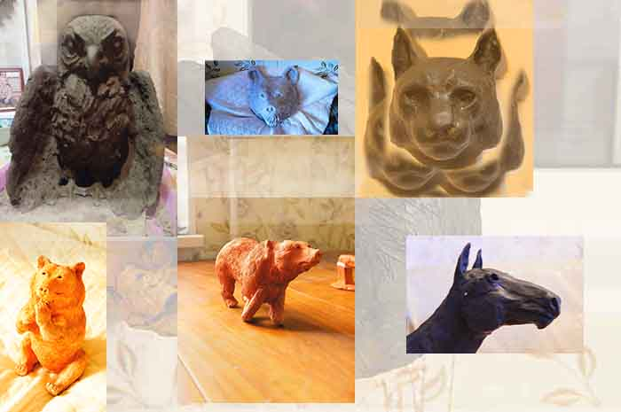

Мои работы.

Немного о глине
Про глину написано много интересных и полезных литературных работ и однозначно можно сказать, что всё что связано с ней имеет глубокие корни в древности и даже гончарное дело имеет многотысячную историю. Мой учитель рассказывал, что возникла она из минеральных отложений различных морских организмов, которые впоследствии под воздействием окислительных процессов, а также находясь под слоем земли превратились в вещество, ставшее столь полезным для человека.
В настоящее время глину используют в большей степени для изготовления кафеля, кирпичей, посуды, цветочных горшков, реже деталей и конечно для обучающих занятий с детьми. По полезности глину можно сравнить с шахматами.
Глина очень развивает объёмное воображение, мелкую моторику
и художественные данные.
Для художников и скульпторов она часто является переходным
материалом,который служит для реализации следующего этапа работы. Но чаще всего так говорят про пластилин.
Для превращения в керамику глина после полной высушки подлежит обжигу
при температуре от 700-1600 градусов, в зависимости от поставленных задач.
Обоженная посуда глазурируется и снова обжигается для того, чтобы забить поры и не дать воде её разрушить. При этом помните,
что не всякая глина может использоваться в гончарных, декоративных целях и обжигаться.
Заготавливается глина в известных районах или глинищах. Для пробы берётся жгутик глины, похожий по составу на пластилин, изгибается и если на нём не будет обнаружено в месте изгиба трещинок, то эта глина скорее всего пригодна для лепки.
Далее она замачивается в воде, размешивается, густая как молоко масса просеивается сквозь мелкое сито, высушивается иногда даже на гипсовой плите, сбивается в большие брикеты, закрывается на трое суток в поэлетиленовый пакет и вот она уже готова
к применению!!! Для более подробной информации смотрите видео и читайте специальную литературу.. Продолжение следует...
------------------------------------------------------
------------------------------------------------------